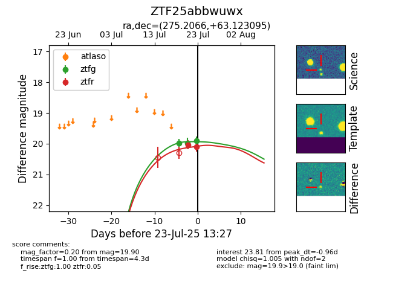

Target ZTF25abbwuwx at 2025-07-23 13:27, see:
FINK: fink-portal.org/ZTF25abbwuwx
Lasair: lasair-ztf.lsst.ac.uk/objects/ZTF25abbwuwx
ALeRCE: alerce.online/object/ZTF25abbwuwx
alt names
ZTF25abbwuwx (ztf,fink)
coordinates:
equatorial (ra, dec) = (275.2066,+63.12309)
galactic (l, b) = (92.6207,+27.40703)
photometry
last ztfg=19.90, ztfr=20.10
3 ztfg, 2 ztfr detections
